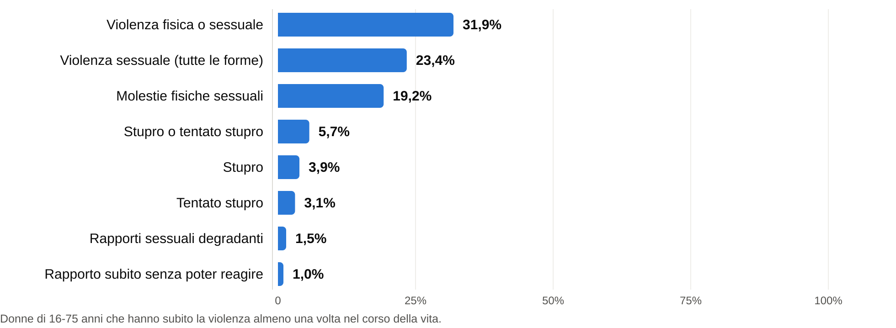
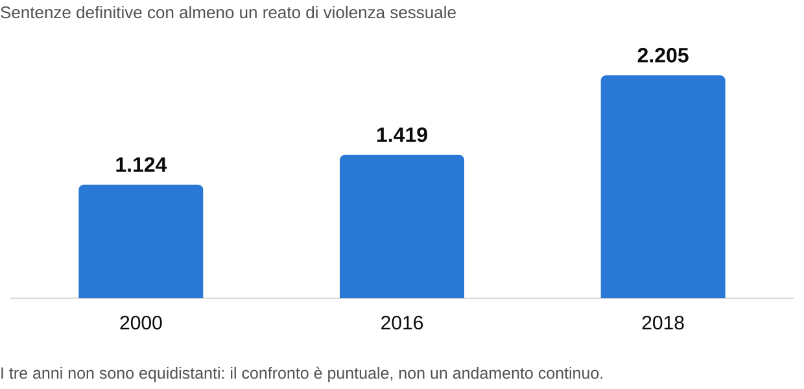

Introduzione
Sulla violenza sessuale in Italia circolano due immagini che sembrano incompatibili. Da una parte i reati registrati: le denunce raccolte dalle forze di polizia, i procedimenti aperti in Procura, le condanne definitive. Dall’altra la violenza che le donne dichiarano di aver subito quando è l’ISTAT a chiederglielo, in indagini campionarie che non passano dal filtro della denuncia. Fra le due misure lo scarto è enorme, e senza tenerne conto qualsiasi discorso sugli autori di questi reati parte storto.
I dati giudiziari mostrano una quota elevata di cittadini stranieri fra denunciati e condannati. Le indagini di vittimizzazione dicono altro: quasi tutti gli stupri avvengono dentro casa o dentro reti di rapporti stretti, contesti in cui gli autori sono in larghissima maggioranza italiani. Le due letture non si smentiscono a vicenda. Quello che cambia da un contesto all’altro è la probabilità che la violenza arrivi davanti a un’ autorità. L’ISTAT lo chiama bias di emersione: la propensione a denunciare non è costante, cambia a seconda di chi è l’autore e del legame che ha con la vittima.
Il rapporto ricostruisce la questione su tre piani: la distanza fra violenza stimata e violenza emersa, l’andamento delle condanne e della popolazione detenuta, la parte che riguarda le vittime minorenni. Le fonti sono ISTAT, con l’aggiunta di dati ministeriali rielaborati dall’Istituto dove indicato.
Serve però una premessa metodologica. Quasi tutte le stime di prevalenza citate più avanti vengono da un’indagine campionaria, circa 17.500 donne italiane intervistate nel 2025, e non da un censimento. Nei report divulgativi l’ISTAT non pubblica gli intervalli di confidenza delle singole stime: differenze piccole fra due percentuali, per esempio il 3,9% dello stupro contro il 3,1% del tentato stupro, indicano una tendenza e non vanno lette come misure precise al decimale.
Cosa dicono le indagini
Le indagini campionarie restano lo strumento migliore per misurare quanta violenza sessuale ci sia davvero, perché non dipendono dalla decisione di denunciare. Secondo le stime preliminari diffuse il 21 novembre 2025, il 31,9% delle donne italiane fra i 16 e i 75 anni, circa 6 milioni e 400 mila persone, ha subito nel corso della vita almeno una violenza fisica o sessuale. Il 23,4% ha subito una qualche forma di violenza sessuale: si va dalle molestie fisiche con contatto non voluto, che riguardano il 19,2% delle donne, fino allo stupro o al tentato stupro, che ne riguardano il 5,7%, circa 1 milione e 147 mila vittime.

Un dettaglio che nel grafico e nella tabella può confondere: il 5,7% di “stupro o tentato stupro” non è la somma di stupro (3,9%) e tentato stupro (3,1%), che darebbe 7%. È la quota di donne che ha subito almeno una delle due cose nel corso della vita, e chi le ha subite entrambe viene contata una volta sola nell’aggregato pur comparendo in tutte e due le percentuali singole. L’ISTAT presenta i dati così nel Prospetto 1: è una caratteristica nota delle statistiche a categorie non mutuamente esclusive, non un errore di calcolo.
Dal Prospetto 2 esce un pattern molto netto: più l’atto è grave, più l’autore è vicino alla vittima. Lo stupro consumato è quasi sempre un delitto di prossimità, mentre lo sconosciuto pesa soprattutto nelle molestie.
| Autore | Stupro | Tentato stupro | Rapporto subito senza poter reagire | Rapporti degradanti o umilianti | Molestie fisiche sessuali |
|---|---|---|---|---|---|
| Donne che l’hanno subita (su 100) | 3,9% | 3,1% | 1,0% | 1,5% | 19,2% |
| Partner o ex partner | 63,8% | 32,0% | 39,4% | 100,0% | n.d. |
| di cui partner attuale | 4,7% | 2,1% | 0,5% | 6,0% | n.d. |
| di cui ex partner | 59,1% | 29,9% | 38,9% | 94,0% | n.d. |
| Parente | 3,4% | 4,1% | 0,0% | n.d. | 2,0% |
| Conoscente | 19,4% | 24,1% | 35,3% | n.d. | 19,5% |
| Amico | 10,9% | 13,4% | 23,3% | n.d. | 7,4% |
| Amico di famiglia | 0,9% | 2,1% | 1,8% | n.d. | 1,4% |
| Collega o superiore | 4,1% | 9,8% | 3,0% | n.d. | 17,0% |
| Sconosciuto | 6,9% | 17,2% | 8,3% | n.d. | 58,7% |
| Altro | 0,9% | 3,3% | 1,2% | n.d. | 1,8% |
| Non specificato | 0,4% | 0,5% | 0,0% | n.d. | 0,2% |
Il partner, attuale o ex, è responsabile del 63,8% degli stupri, e la parte più grossa riguarda gli ex partner: 59,1 punti su quel 63,8. Seguono i conoscenti con il 19,4% e gli amici con il 10,9%. Sul resto l’ISTAT è esplicita: “solo il 6,9% è stato opera di estranei alla vittima”. Quella quota sale al 17,2% nei tentati stupri e arriva al 58,7% nelle molestie fisiche di natura sessuale. È lo stesso fenomeno visto da tre angolature diverse: la gravità dell’atto cresce man mano che si riduce la distanza relazionale fra vittima e autore.
Cosa dicono i dati giudiziari
I dati di fonte giudiziaria nascono dalla registrazione dei reati da parte delle forze di polizia, il sistema SDI-SSD del Ministero dell’Interno, e dalle sentenze del Ministero della Giustizia; da lì confluiscono nelle statistiche ISTAT su giustizia e criminalità. A differenza delle indagini di vittimizzazione catturano solo la parte emersa, cioè i casi in cui l’autore viene identificato, denunciato ed eventualmente processato. Lungo questo percorso la presenza di cittadini stranieri è molto più alta di quella che si ricava dalle indagini sulle vittime.
Nel 2022 le forze di polizia hanno registrato 4.884 segnalazioni per violenza sessuale (art. 609-bis c.p.). Tra gli autori noti, cioè identificati e denunciati o arrestati, i cittadini stranieri erano il 42,2%.
I flussi del primo semestre 2024 confermano il quadro: le violenze sessuali denunciate sono cresciute dell’8% rispetto allo stesso periodo del 2023, da 2.991 a 3.229 casi, con una quota di autori stranieri stabile fra il 44% e il 46%. Colpisce anche la concentrazione per nazionalità, visto che le segnalazioni a carico di cittadini di sole quattro nazionalità valgono il 41% del totale degli autori stranieri.
I dati ISTAT sui procedimenti definiti presso le Procure si fermano al 2015, ma restano gli ultimi disponibili a questo livello della filiera. Nella violenza sessuale singola gli indagati italiani sono il 64,1% dei procedimenti con azione penale avviata e il 66,3% di quelli archiviati; il resto, cioè il 35,9% e il 33,7%, sono cittadini stranieri, compresi i connazionali della vittima. Nella violenza sessuale di gruppo (art. 609-octies c.p.) il rapporto si rovescia: gli italiani scendono al 41,6% dei procedimenti con azione penale avviata e al 50,0% di quelli archiviati.
Le serie del Casellario Giudiziale Centrale mostrano una crescita lunga. Le sentenze definitive con almeno un reato di violenza sessuale erano 1.124 nel 2000, sono salite a 1.419 nel 2016 e a 2.205 nel 2018. La maggioranza dei condannati resta di cittadinanza italiana, ma la componente straniera è cresciuta parecchio: era il 21,1% nel 2000, il 41,6% nel 2016, il 41,5% nel 2017, quando 702 dei 1.693 condannati definitivi erano stranieri.

La tabella e il grafico che seguono mettono in fila la quota di autori stranieri nelle diverse fasi della filiera, in anni che vanno dal 2000 al 2022. Vanno letti con una cautela: non descrivono il percorso degli stessi casi da una fase all’altra, perché fonti, coorti e metodologie cambiano. Sono fotografie separate, utili però a vedere come la quota straniera si mantenga intorno al 40% lungo tutto il percorso, dalla denuncia alla condanna.
| Fase della filiera (anno) | Italiani | Stranieri | Fonte |
|---|---|---|---|
| Denunciati o arrestati dalle Forze di Polizia (2022) | 57,8% | 42,2% | Min. Interno, SDI-SSD |
| Azione penale avviata, violenza singola (2015) | 64,1% | 35,9% | Istat, Procure |
| Archiviazione, violenza singola (2015) | 66,3% | 33,7% | Istat, Procure |
| Azione penale avviata, violenza di gruppo (2015) | 41,6% | 58,4% | Istat, Procure |
| Condanne definitive (2000) | 78,9% | 21,1% | Istat, Casellario Giudiziale |
| Condanne definitive (2016) | 58,4% | 41,6% | Istat, Casellario Giudiziale |
| Condanne definitive (2017) | 58,5% | 41,5% | Istat, Casellario Giudiziale |
Il bias di emersione
Per sciogliere l’apparente contraddizione fra la prevalenza di autori italiani nelle indagini di vittimizzazione e l’alta quota di stranieri nei dati giudiziari conviene guardare a chi arriva davvero a denunciare.
L’ISTAT ha documentato che la propensione alla denuncia varia con la cittadinanza dell’autore. Nel caso dello stupro consumato, la percentuale di vittime italiane che denuncia un autore straniero è oltre 6 volte più alta rispetto a quando l’autore è italiano, nel tentato stupro il divario arriva a 10 volte.
Quando la violenza avviene in casa, o comunque per mano di un partner, di un ex, di un parente o di un amico, e per le vittime italiane si tratta quasi sempre di uomini italiani, la donna ha davanti ostacoli psicologici, affettivi ed economici che pesano moltissimo: la paura di ritorsioni, l’isolamento sociale, la vittimizzazione secondaria. I dati 2025 lo dicono chiaramente: fra chi ha subito violenza domestica o di coppia negli ultimi cinque anni,solo il 10,5% è arrivata a sporgere denuncia formale.
Quando invece l’autore è uno sconosciuto, o comunque una persona estranea alle reti sociali della vittima, quelle barriere non ci sono e la denuncia parte molto più facilmente. Ed è proprio nei casi di autore estraneo che i dati giudiziari registrano la quota più alta di stranieri. L’elevata incidenza di stranieri nei registri delle denunce, quindi, non misura una prevalenza proporzionale nella commissione del reato: misura in buona parte la selettività del processo di emersione.
Un’altra conferma della natura di prossimità di questi reati arriva dalla distribuzione per cittadinanza di vittime e autori. Omicidi e violenze sessuali sono in larga prevalenza delitti intra-etnici: secondo i dati ISTAT sugli omicidi volontari, il 93,4% delle vittime donne di cittadinanza italiana viene ucciso da cittadini italiani. Allo stesso modo, quando la vittima di violenza sessuale è una donna straniera residente in Italia, l’aggressore è un connazionale in circa 3 casi su 4, il 73,2%.
Cosa dicono i dati sui minori
Il rapporto ISTAT “Quali indicatori per misurare la violenza contro i minori” (giugno 2025) registra un aumento delle segnalazioni di minori vittime di violenza sessuale, arrivate a 1.662 nel 2023 e trainate soprattutto dalle ragazze fra i 14 e i 17 anni. I presunti autori iscritti nei registri delle notizie di reato sono passati da 4.426 nel 2013 a 5.837 nel 2023, e gli uomini restano stabilmente il 98% del totale.
I minorenni pesano poco sul totale degli autori di violenza sessuale, il 5,9%, ma il loro coinvolgimento è cresciuto del 26,3% nell’ultimo biennio. Il caso estremo è la violenza sessuale di gruppo (art. 609-octies c.p.), dove gli autori minorenni arrivano al 47% dei casi. Per la pornografia minorile (art. 600-ter c.p.) la quota di autori minorenni è del 14% e per la detenzione di materiale pedopornografico (art. 600-quater c.p.) dell’11%, mentre per le altre fattispecie di abuso sessuale resta sotto il 10%.
Il monitoraggio dei Centri Antiviolenza previsto dalla Legge 53/2022 aggiunge un tassello. Nel 2022, delle 26.131 donne che hanno avviato un percorso di uscita dalla violenza, 477 erano minorenni: il 61% di loro ha indicato la violenza sessuale come motivo principale della richiesta d’aiuto, con 161 casi di stupro o tentato stupro e 133 di altre forme di abuso o molestia sessuale.
Cosa dicono i dati sulle carceri
Secondo l’Annuario Statistico Italiano 2025, al 31 dicembre 2024 nelle carceri italiane c’erano 61.861 detenuti, di cui 19.694 stranieri, il 31,8% del totale, concentrati soprattutto nel Centro-Nord dove sta il 78,8% dei detenuti stranieri. Le nazionalità più rappresentate sono il Marocco con il 21,5%, poi Romania, Tunisia e Albania fra il 10,9% e il 9,8%, quindi la Nigeria con il 5,6%. Le persone in esecuzione penale esterna alla stessa data erano 93.475, circa 32 mila in più dei detenuti in carcere, e l’affidamento in prova è la misura extramuraria più applicata con il 34,2% delle modalità di espiazione della pena.
La sovrarappresentazione dei cittadini stranieri nelle statistiche penitenziarie riguarda anche i delitti di violenza sessuale, per i quali nel 2022 risultavano 3.566 detenuti maschi e nessuna donna. In parte dipende da barriere che con la gravità del reato hanno poco a che fare:
- Detenzione domiciliare e affidamento in prova richiedono un domicilio idoneo e verificabile, che chi vive in condizioni di marginalità o di irregolarità amministrativa quasi mai riesce a documentare.
- Senza un nucleo familiare stabile o un lavoro regolare, l’accesso ai benefici extramurari concessi dalla magistratura di sorveglianza è di fatto precluso.
- Custodia cautelare. La stessa difficoltà a trovare un alloggio adeguato pesa già nella fase cautelare, allunga la permanenza in carcere in attesa di giudizio e gonfia i numeri della popolazione detenuta.
Le mie conclusioni
Il quadro che esce dai dati ISTAT è pieno di tendenze che vanno in direzioni diverse. Sul piano sociale la consapevolezza cresce: nell’ultimo quinquennio le chiamate al numero di pubblica utilità 1522 sono più che raddoppiate, fino a 65.048 nel 2024. Difficilmente siamo davanti a un’impennata improvvisa dei reati; è più plausibile leggere quel numero come effetto delle campagne di informazione e della fiducia crescente nelle reti di protezione territoriale.
Sul piano giudiziario, però, questa crescita non si vede. L’Annuario Statistico Italiano 2025 registra una sostanziale stabilità delle denunce per violenza sessuale, con una lieve flessione dell’1%, e tempi processuali che restano lunghissimi: la fase istruttoria dei procedimenti ordinari supera in media i 1.900 giorni.
La forte asimmetria fra autori italiani e stranieri nel sistema giudiziario e in carcere si spiega quindi in larga parte con la selettività del processo di emersione. Funziona come un moltiplicatore di denuncia che colpisce molto più severamente gli autori estranei alla vittima, mentre la maggioranza degli stupri, quelli domestici e intrafamiliari commessi da autori italiani, resta in gran parte invisibile nelle statistiche ufficiali.
Fonti
Istat, La violenza contro le donne dentro e fuori la famiglia. Primi risultati anno 2025 (21 novembre 2025)
Istat, comunicato stampa relativo al report 2025
Istat, Delitti, imputati e vittime dei reati
https://www.istat.it/it/files/2017/10/Delitti-imputati-e-vittime-dei-reati.pdf
Istat, Audizione del Presidente alla Commissione parlamentare sul femminicidio, 11 gennaio 2018
https://www.istat.it/it/files/2017/09/Audizione-femminicidio-11-gennaio-2018.pdf
Istat, Audizione alla Commissione femminicidio, 23 gennaio 2024
Istat, Procedimenti definiti in Procura
Istat, Annuario Statistico Italiano, Giustizia, criminalità e sicurezza, capitolo 6, edizioni 2024 e 2025
https://www.istat.it/storage/ASI/2025/capitoli/C06.pdf ; https://www.istat.it/storage/ASI/2024/capitoli/C06.pdf
Istat, Quali indicatori per misurare la violenza contro i minori (giugno 2025)
https://www.istat.it/wp-content/uploads/2025/05/Corradini_Sara_Violenza_minori_16_06_2025.pdf
Istat, Tavole sulla violenza sulle donne
https://www.istat.it/wp-content/uploads/2016/12/tavole-violenza-sulle-donne.xls
Istat, Condanne
Istat, I condannati con sentenza definitiva nel periodo 2000-2011
https://www.istat.it/it/files/2013/11/STAT_CONDANNATI-18-nov.pdf
Dipartimento per le Pari Opportunità, Piano strategico nazionale sulla violenza maschile contro le donne 2021-2023
https://www.pariopportunita.gov.it/media/1952/piano-nazionale-violenza-2021-2023.pdf
Istat, Molestie e violenze sessuali (2002)
https://www.istat.it/it/files/2017/11/Molestie_violenze_sessuali_2002.pdf
Istat, Reati contro la persona e la proprietà, vittime ed eventi
Istat, comunicato stampa Reati contro la persona e la proprietà 2022/2023
Istat, Nota metodologica
https://www.istat.it/it/files/2016/12/Nota-metodologica.pdf
Istat, Discriminazioni e odio, audizione Commissione Antidiscriminazioni, 13 aprile 2022
Istat, Indagine conoscitiva sulle forme di violenza fra i minori, memoria scritta 1 giugno 2020
https://www.istat.it/it/files/2020/06/Istat_Memoria-scritta_Violenza-tra-minori_1-giugno-2020.pdf
Ministero dell’Interno, La criminalità tra realtà e percezione
https://www.interno.gov.it/sites/default/files/2023-05/la_criminalita-_tra_realta_e_percezione.pdf
Polizia di Stato, Rapporto sulla violenza sulle donne
https://www.poliziadistato.it/statics/17/rapporto-violenza-sulle-donne.pdf
Istat, Vittime di omicidio, anni 2022, 2023 e 2024
https://www.istat.it/it/files/2023/11/Vittime-di-omicidio-2022.pdf ; https://www.istat.it/wp-content/uploads/2024/11/Report_Vittime-di-omicidio_Anno-2023.pdf ; https://www.istat.it/wp-content/uploads/2025/11/Report_Le-vittime-di-omicidio_Anno-2024.pdf
Senato della Repubblica, Relazione
https://www.senato.it/service/PDF/PDFServer/DF/442042.pdf
Istat, Violenza di genere: fenomeno e stereotipi nei dati ufficiali
https://www.istat.it/wp-content/uploads/2026/03/Carra_Arianna_24marzo2026.pdf
Istat, I Centri Antiviolenza e le donne che hanno avviato il percorso di uscita dalla violenza, anno 2024
https://www.istat.it/wp-content/uploads/2026/03/Centri-antiviolenza_Istat-DPO_Anno-2024.pdf
Questione Giustizia, Audizione Commissione Giustizia della Camera su AC n. 1693, modifica dell’art. 609-bis c.p.
https://www.questionegiustizia.it/data/doc/4334/art-per-nuovo-609-bis.pdf
Istat, Gli stranieri e il carcere: aspetti della detenzione
https://ebiblio.istat.it/digibib/Informazioni/IST0043718Stranieri_carcere_aspetti_detenzione.pdf
Istat, Goal 16, SDGs 2025
https://www.istat.it/storage/rapporti-tematici/sdgs/2025/Goal16-2025.pdf
Pagella Politica, Non ci sono prove che il 40 per cento degli stupri sia commesso da stranieri
https://pagellapolitica.it/articoli/violenze-sessuali-stupri-stranieri
Pagella Politica, Violenze sessuali e immigrati: il fact-checking di Valditara
https://pagellapolitica.it/articoli/fact-checking-valditara-immigrati-irregolari-violenze-sessuali